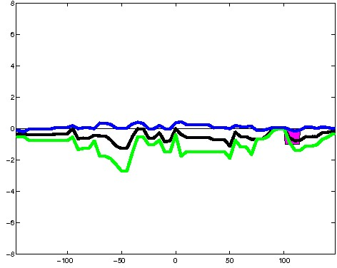
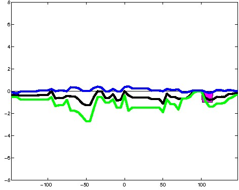
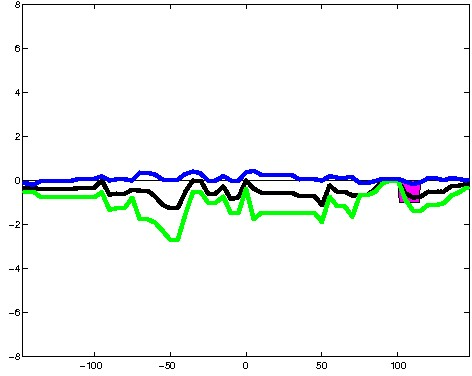

K562 Repressive DNase matched - State 4:PromP (n=36)
K562 Repressive DNase matched - State 4:PromP (n=36)
[
See group descriptions
]

; picked in K562 (state 4:PromP, DNase); matched; chr1:168,106,569-168,106,863 (295bp)")
; picked in K562 (state 4:PromP, DNase); matched; chr16:87,604,909-87,605,203 (295bp)")
; picked in K562 (state 4:PromP, DNase); matched; chr6:43,359,229-43,359,523 (295bp)")
; picked in K562 (state 4:PromP, DNase); matched; chr1:161,993,989-161,994,283 (295bp)")
; picked in K562 (state 4:PromP, DNase); matched; chr19:1,929,349-1,929,643 (295bp)")
; picked in K562 (state 4:PromP, DNase); matched; chr12:49,389,249-49,389,543 (295bp)")
; picked in K562 (state 4:PromP, DNase); matched; chr8:82,542,989-82,543,283 (295bp)")
; picked in K562 (state 4:PromP, DNase); matched; chr14:95,982,389-95,982,683 (295bp)") 

; picked in K562 (state 4:PromP, DNase); matched; chr15:38,543,449-38,543,743 (295bp)")
; picked in K562 (state 4:PromP, DNase); matched; chr5:76,114,589-76,114,883 (295bp)")
; picked in K562 (state 4:PromP, DNase); matched; chr7:155,005,749-155,006,043 (295bp)")
; picked in K562 (state 4:PromP, DNase); matched; chr8:22,419,749-22,420,043 (295bp)")
; picked in K562 (state 4:PromP, DNase); matched; chr16:4,065,289-4,065,583 (295bp)")
; picked in K562 (state 4:PromP, DNase); matched; chr8:145,753,729-145,754,023 (295bp)")
; picked in K562 (state 4:PromP, DNase); matched; chr9:140,335,669-140,335,963 (295bp)")
; picked in K562 (state 4:PromP, DNase); matched; chr1:10,269,849-10,270,143 (295bp)")
; picked in K562 (state 4:PromP, DNase); matched; chr5:54,468,729-54,469,023 (295bp)")
; picked in K562 (state 4:PromP, DNase); matched; chr12:49,365,289-49,365,583 (295bp)")
; picked in K562 (state 4:PromP, DNase); matched; chr6:26,593,809-26,594,103 (295bp)")
; picked in K562 (state 4:PromP, DNase); matched; chr1:21,767,249-21,767,543 (295bp)")
; picked in K562 (state 4:PromP, DNase); matched; chr7:1,462,749-1,463,043 (295bp)")
; picked in K562 (state 4:PromP, DNase); matched; chr15:98,971,589-98,971,883 (295bp)")